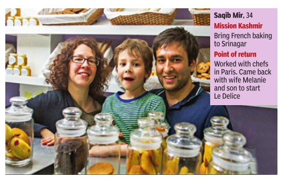

|
The Kashmir stories that have eluded the headlines
The Valley is on the boil again, but relative peace over the last few years has encouraged
entrepreneurs to return to set up young new businesses
from cafés and event companies, to e-comm shopping sites
|
How a Kerala village missed the signs of radicalization...
till 12 went missing
Padne, a secular island till recently, is bewildered by the flight of some of its Muslim youth
|
||||||||||||
|---|---|---|---|---|---|---|---|---|---|---|---|---|---|
|
BAGUTTEIN THE TIME OF STRIFE
Anoothi Vishal
If you are amongst the thousands who visited Kashmir this summer before last week's strife soured things and left a taste of tragedy and heartache all around, you may have had a chance to sample some new beginnings. For the last two years, and particularly in the last few months, restaurant start-ups in Srinagar have been sweetening things up in the Valley's summer capital, marking its gradual return to normal life and the little pleasures such a life can afford. From a French style bakery to a pretty English style tea room, from a chic co-working space to a coffee cube serving up piri piri chicken by the Jhelum, restaurant retail formats by young food entrepreneurs have been gaining the attention of both locals and tourists alike. Most of these cafés, bakeries and restaurants are pretty aligned to the latest in food fashion in the Indian metros and other dining capitals of the world. Now, with the fresh bout of violence, their young owners are uncertain, and hoping that the past will not come back to haunt them.
“For the last 30-40 years, things had just not changed,“ says Hayat Bhat, who looks after the legendary Adhoo's that his family has owned and run since 1918, and hopes to give it a new direction. “It was only when young Kashmiris who had either studied abroad or lived in cities like Delhi, Mumbai and Bengaluru started returning and setting up their own cafés and restaurants
started
Adhoo's, with a reputation for the best Kashmiri wazwan, has been under renovation; Bhat's planning a makeover that will see contemporarised offerings while keeping the essence of the old. He plans an open-air grill section in the courtyard that was coveted before militancy took over, a new café on the site of the old bakery, to serve up pizzas and platters besides the old specials like walnut tarts and peach pies. And he plans to lighten some of the wazwan specials. “We will contemporarise a few things. Like gushtaba could be presented differently for a younger audience...“ he trails off. The plans though are now on tenterhooks. The renovation, already delayed by a year, is set to finish next year. But Bhat hopes “the situation doesn't become what it was in 2010, when we were all forced to stay shut for six months....“ Le Delice, a French-style bakery on Boulevard Road, has legions of offline and online admirers, all with a good word about its fresh baguettes, croissants, macarons, éclairs, and more. Saqib Mir, 34, who runs it with |

|
Impact is what 24-year-old Ahmer Khan -founder of event management startup Loudbeetle -has been striving for too, and managed to achieve when he organized Asia's largest iftar party last year. “We hosted a 1.6km-long chain over `dastarkhans', with over 3,500 Kashmiris participating,“ says Khan, who also men tors aspiring entrepreneurs in Kashmir. Industrialist Shakeel Qalandar says there is a lot of potential waiting to be tapped in the Valley . Qalandar was part of a central government panel headed by former RBI governor C Rangarajan in 2010 to formulate policies for job op portunities in Kashmir. “Young people can start ventures in both the manufac turing and service sectors. It's great to hear about the startup scene here,“ he says. More could have been done for young people if the panel's recommen dations had been adopted, he added. These included setting up a skill devel opment scheme under a public-private partnership model, and reviving flow of credit to certain sectors. Easier access to funding is some thing Danish Mir would have appreci ated after the 2014 floods. “We suffered huge losses and had to move to Mumbai for a while,“ says Mir, who co-founded the Kashmir-specific shopping site, Kashmirbasket.com in 2013 after a stint at Wipro. Mir, who is from a middle class family, came up with the idea when he was in college in Pune. Every time the 27-year-old was going home for the holidays, his friends would send long lists of things they wanted from Kashmir -dry fruits, shawls, silk scarves, saf fron and wazwan. “I know how people admire the art, culture and handicrafts from my state and are will ing to pay for them,“ says Mir. “The perk was return ing home,“ he says. Mir works with small-scale in dustries and with artisans directly to sell their work to the world via the web. The floods taught him a few hard lessons. He now has more than two manufac turers for each category so that buyers have a wider that buyers have a wider choice and supply is not disrupted. Another entrepreneur who had a run of bad luck but hasn't given up is Tanveer ul Haq, who left a job at Infosys to set up a software company in Kashmir. He too lost every penny in the 2014 floods. “My friends left and went back to Delhi but I decided to stick around,“ says ul Haq, who is from an agricultural family , and de cided to start a food processing plant in Lassipora in Pulwama district. “My par ents were completely against it. So were my in-laws-to-be since I had just got en gaged at the time,“ says the 31-year-old. His wedding was postponed for two years, but ul Haq refused to get disheartened. “Even now, I continue to face all kinds of problems -anything that should take two days takes more than two months but I know it's a matter of time before things work out and Kashmir gets back on its feet,“ he says. |
|
||||||||||
|
Star Trek: Going where society has never gone before
|
||||||||||||||||
|
As a new movie marks the 50th anniversary of the iconic series, Anvar Alikhan looks at how Star Trek broke societal and tech barriers
|
|
Desis on board One can't talk of Star Trek without remembering Persis Khambatta, former Miss India, and arguably the first Indian actress to play a major role in a Hollywoood film. For the first Star Trek movie, in 1979, she was selected out of hundreds of candidates to play the part of Lieutenant Aliea, the gorgeous alien navigator of USS Enterprise -a part she made memorable with her iconically beautiful bald head. The late Ms Khambatta might not be on board Star Trek: Beyond, but there are two Indian-origin actors, Deep Roy and Harpreet Sandhu, who play the roles of Keenser and a cockpit crew-member respectively , thereby going -to twist the famous Star Trek catch-phrase -where only one Indian has gone before. Elba), who seeks vendetta against the Federation and its values. The intriguing thing, though, is that we realize that Krall's vendetta is actually quite justifiable -in keeping with the thought-provoking messaging that has been a hallmark of Star Trek adventures. |
||||||||||||||